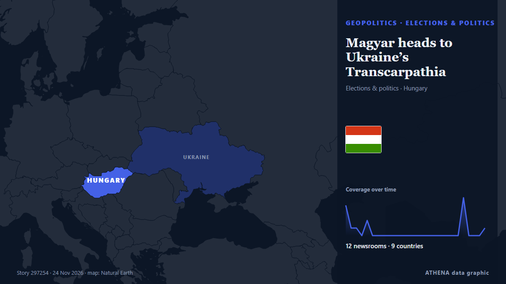

Geopolitics, Politics & Security
SponsoredPresented by  Cybernetics and Artificial Intelligence Lab Welcome to the Cybernetics and Artificial Intelligence Laboratory, established at the Department of Business Administration of the National and Kapodistrian University of Athens. The lab is headed by Professor Dimitrios Thomakos. The lab aims to do research that can be published in top venues. Our research uses tools and methods of Artificial Intelligence, and lies in the following areas: - Forecasting - Decision making - Cyber security - Finance We are always looking forward to collaborating with exceptional students!
Cybernetics and Artificial Intelligence Lab Welcome to the Cybernetics and Artificial Intelligence Laboratory, established at the Department of Business Administration of the National and Kapodistrian University of Athens. The lab is headed by Professor Dimitrios Thomakos. The lab aims to do research that can be published in top venues. Our research uses tools and methods of Artificial Intelligence, and lies in the following areas: - Forecasting - Decision making - Cyber security - Finance We are always looking forward to collaborating with exceptional students!

Elections & politicsMagyar heads to Ukraine’s Transcarpathia
This is the first visit by a Hungarian prime minister to Ukraine since 2015. from TASS (English)
| 11 Nov | 261 |
|---|---|
| 12 Nov | 265 |
| 13 Nov | 223 |
| 14 Nov | 180 |
| 15 Nov | 199 |
| 16 Nov | 272 |
| 17 Nov | 259 |
| 18 Nov | 245 |
| 19 Nov | 254 |
| 20 Nov | 223 |
| 21 Nov | 159 |
| 22 Nov | 157 |
| 23 Nov | 208 |
| 24 Nov | 50 |
Israeli strikes in Gaza kill 7 including senior Hamas security official
Several other people were in critical condition following the same strike. from The Straits Times
Sheikh Hasina seeks to return to Bangladesh on December 16 on state carrier
Minister terms ex-PM 'fugitive terrorist', says she can only return by extradition in handcuffs, under surveillance. from Express Tribune
US army says detonation of lead explosives in Iowa will proceed
Public outcry led to a legal battle when details of the plans to conduct two controlled detonations surfaced. from Al Jazeera English
Libya demands Ukraine clarify attacks on Russian vessels near Benghazi
Tripoli calls for an investigation into whether Libyan territory or facilities were used in the operations, warning against being drawn into the Russia-Ukraine war. from TRT World
UK warns of Russian sabotage threat to companies that supply Ukraine
LONDON, Nov 24 - Britain's defence ministry and domestic spy agency MI5 on Tuesday issued a warning to companies providing direct support to Ukraine's military that they faced an increased sabotage… from The Straits Times
Russian Strike Kills Two, Injures 40 in Ukraine’s Zaporizhzhia
The strike damaged apartment buildings, destroyed a private home and hit nearby houses, vehicles and transport infrastructure. from News of Bahrain
US Imposes Sanctions on Dozens Linked to Iran’s Shadow Banking Networks
By Andrea Shalal WASHINGTON, Nov 23 (Reuters) - The Trump administration has issued new Iran-related sanctions targeting dozens of people and entities, the Treasury Department said on Monday… from Al-Monitor
EU to ban Russian flags and teams at European sports events, in new sanctions round
"We are introducing bans on Russian teams and athletes competing under the Russian flag. from EUobserver
Pentagon Delays Transfer of 60 Patriot Missiles to Ukraine – FT
US Defense Secretary Pete Hegseth is reportedly delaying the transfer of around 60 Patriot interceptor missiles already purchased by Ukraine’s Western allies. from Kyiv Post
S. Korean won climbs against U.S. dollar on foreign inflows
SEOUL, Nov. 24 (Yonhap) -- The South Korean won strengthened against the U.S. do... from Yonhap (English)
Russia to Spend $576m on Kaliningrad Supply Ferries
Russia will spend 47 billion roubles ($576 million) to build two giant rail ferries to ensure uninterrupted supplies to its Baltic exclave of Kaliningrad amid rising tensions in the region, Prime… from MarineLink
NATO to send early-warning system aircraft to Poland after missiles incident
Three Russian Kh-101 missiles landed in Poland last week, prosecutors said, adding to fears that Russia's war in Ukraine could spill into NATO territory. from The Straits Times
Moscow accuses Estonia of hostile actions on ‘verge of triggering open war’
Among a list of accusations, Russia said Estonia had allowed Ukraine to use its airspace “on the quiet” to attack Russian targets. from The Straits Times
Netanyahu, Eisenkot Fail To Seal A Deal, Israel Government Deadlock Stays
Netanyahu and his allies regularly target Arab parties, which secured a record 19 seats in the legislature and are opposed to Netanyahu remaining in power. from NDTV World
EU unveils 22nd Russia sanctions package as war nears sixth year
European Commission President Ursula von der Leyen unveiled the 27-member bloc's proposed 22nd package of Russia-related sanctions. from UPI World News
Iraqi security forces deploy in Iran-backed militia stronghold
By Maher Nazeh, Muayad Hameed and Eman Abouhassira JURF AL-SAKHAR, Iraq, DUBAI, Nov 20 (Reuters) - Iraqi security forces deployed inJurf al-Sakhar, a stronghold of the Kataib Hezbollaharmed group, on… from Al-Monitor
Ukraine sank Russian corvette Merkury off Libya: Zelenskyy
A Russian Navy guided-missile corvette – assessed to be the Project 20380 Steregushchiy-class warship Merkury – has been engulfed in flames following an explosion in the Libyan port of Benghazi… from Kyiv Post
With US midterms underway, courts rebuff Trump's pressure on state election officials
Nov 3 - In the hours before polls opened for the US midterm elections on Tuesday, federal judges issued a series of rulings restricting the Trump administration's unprecedented efforts to pressure… from The Straits Times
Israeli Strikes Kill at Least 3 in Gaza, Including Worker with UN Palestinian Agency
CAIRO: Israeli airstrikes killed at least three people in Gaza on Monday, including a man working for the UN Palestinian refugee agency UNRWA, the relief agency and local health officials said. from Arab News
Netanyahu, Eisenkot parties end talks without deal on forming Israel govt
The parties of caretaker Israeli prime minister Benjamin Netanyahu and his rival Gadi Eisenkot concluded a new round of talks on Sunday without reaching an agreement on a possible coalition… from Al-Monitor
'Jewish terrorism': Eisenkot condemns West Bank arson attacks
Israeli opposition leader Gadi Eisenkot has condemned Israeli settler attacks in the occupied West Bank as "Jewish terrorism". from The New Arab
Estonia to close border with Russia for at least six months
The decision is a response to Russia’s ongoing hostile actions against Estonia. from The Straits Times
US intelligence chief predicts more tech outages as systems undergo upgrades
Jay Clayton said the upgrades were necessary to improve performance and cybersecurity as technological advances strain older systems. from Free Malaysia Today
Ukraine says Russian strikes kill 15 in Kyiv region
DYMER: A Russian strike on a block of flats north of Kyiv killed one person after causing the building to partially collapse, Ukraine said on Sunday, warning there could be more vi... from Oman Observer
Democrats Clinch a Historic House Majority of at Least 258 Seats, the Largest Since 1992
House Democrats have achieved a historic majority by securing at least 258 seats, the largest since 1992, surpassing their gains from the 2018 midterms. from Arab News
Ireland hit with more bomb threats as security preparations ramp up for EU summit
Dublin is preparing for the largest gathering of heads of state and government ever hosted by Ireland. from TheJournal.ie
Sudan: Saudi Arabia Strongly Condemns Drone Attacks On Sudanese Capital, Including UN Facility
[SNA] Riyadh, (SPA-SUNA) - The Saudi Ministry of Foreign Affairs expressed the Kingdom of Saudi Arabia's strong condemnation and denunciation of the attacks targeting the Sudanese capital, Khartoum… from AllAfrica
Endurance athlete swims in Strait of Hormuz to highlight Iran war's impact on wildlife
British endurance swimmer Lewis Pugh has swum in the North Pole and Antarctica to draw attention to environmental causes. from Mainichi (English)
US Intelligence Chief Says Putin Is 'Not America's Friend In Ukraine'
Trump’s description of Putin as a friend during the APEC summit drew criticism from European allies of Ukraine. from The Straits Times
Trump on ’60 Minutes’ Reflects on Midterm Loss, Death and Forgiveness: ‘I Do Hate Some of My Enemies’
President Trump told “60 Minutes” that he blames Republican candidates and the war in Iran for the party’s midterm defeat, and acknowledged that his mass deportation policy was “too tough.” Sitting… from Variety
Pentagon moves to restrict US-Canada defence ties
WASHINGTON: US Defence Secretary Pete Hegseth has imposed new restrictions on military cooperation with Canada, according to US media, as the Pentagon said Saturday it was refocusing the relationship… from Business Recorder
Six people killed as Russian attack destroys five-storey apartment building near Kyiv
A number of people are feared to be trapped under the rubble in Dymer. from TheJournal.ie